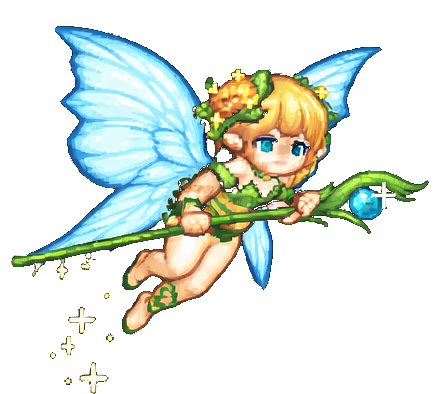

Colete corações para ganhar vida e poções para passar de fase
Desvie dos insetos para não morrer!
Se você morrer, seu parceiro(a) também morre, porém, ganha quem fizer mais pontos
Quando uma das fadas alcançar 40 pontos, passa para a fase 2, 90 para a fase 3, e 130 para ganhar!
Bom jogo!